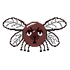

~ Fly Killer ~
Mosa alla flugorna genom att klicka på dem innan tiden tar slut.

~ Game Over ~
You are a lousy flyswatter - You are fired!
~ You did it ~
You are the perfect flyswatter - You are hired!